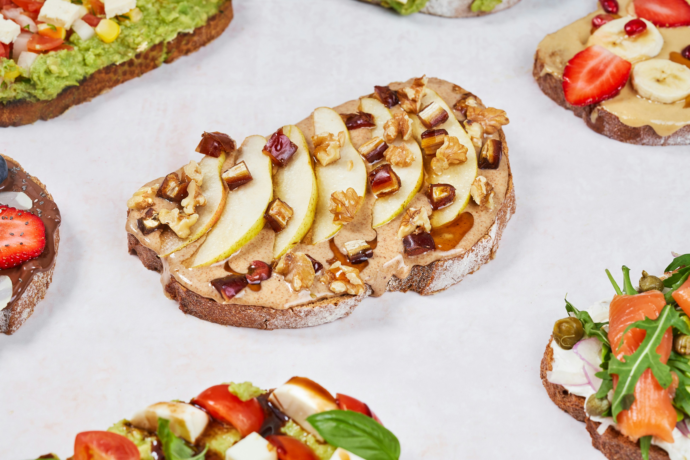

Home
Toasted Apple-Pecan Brie Sandwiches

Description
I came up with this recipe one night for dinner and my husband and family loved it and it has become a regular for us. The combination of spiced apples and brie cheese is amazing. Great served with a spring lettuce salad. You can also make this as an appetizer by using a baguette loaf instead of sourdough slices.
Ingredients
- 3 tablespoons butter
- 4 Granny Smith apple - peeled, cored and sliced
- ½ cup packed brown sugar
- 1 teaspoon ground cinnamon
- ¼ cup chopped pecans
- 4 slices sourdough bread
- 2 tablespoons butter
- 6 ounces Brie cheese, cut into long, even slices
- 1 pinch ground cinnamon, for dusting
Steps
- Melt 3 tablespoons of butter in a large skillet over medium heat. Add the apples; cook and stir until tender, 7 to 8 minutes. Stir in the brown sugar, 1 teaspoon of cinnamon and pecans and continue to cook for 1 to 2 minutes longer. Remove from the heat and set aside.
- Preheat the oven's broiler.
- Cut the slices of bread in half if they are very large and toast lightly. Spread the remaining butter on to one side of each piece of bread. Place two slices of brie cheese onto the unbuttered side of each piece of bread. Top with a generous scoop of the apple mixture. Place the open face sandwiches onto a baking sheet.
- Broil until the cheese has melted, about 1 minute. Sprinkle with additional cinnamon if desired.
- Enjoy!